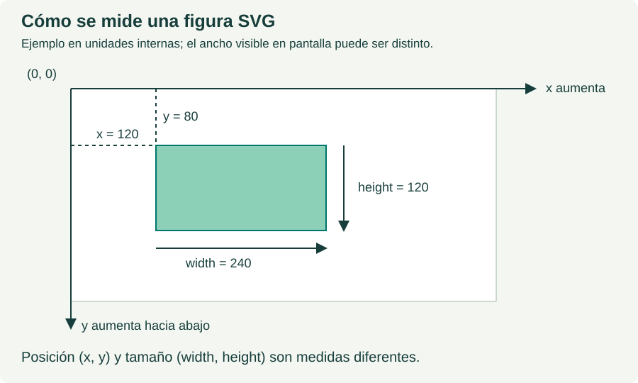

UN ARCHIVO · UN CONCEPTO
d3.axisLeft
Crea un generador de eje izquierdo. Se dibuja al aplicarlo a una selección o transición, normalmente mediante call.
Paso siguiente a las escalas: empieza por axisBottom. El generador prepara las marcas y call las dibuja dentro del grupo SVG.
Sintaxis
const escala = d3.scaleLinear().domain([0,100]).range([200,40]);
const eje = d3.axisLeft(escala);
d3.select("#eje").call(eje);Qué son los nombres del ejemplo. dimensiones es el array [560,240]; ancho y alto extraen sus posiciones 0 y 1. escala guarda una función; eje guarda el generador y grupo guarda la selección del elemento g. Son variables creadas aquí, no comandos de D3.
Resultado esperado: Se dibuja el eje con la orientación elegida.
Ejemplo paso a paso
El código JavaScript de D3 crea y muestra la visualización SVG de d3.axisLeft.
HTML inicial dentro de #demo
<svg id="lienzo" viewBox="0 0 560 240">
<g id="eje"></g>
</svg>JavaScript del ejemplo
// 1. [ancho, alto] del lienzo y un margen para las etiquetas.
const dimensiones = [560, 240];
const ancho = dimensiones[0];
const alto = dimensiones[1];
const margen = 40;
d3.select("#lienzo").attr("viewBox", "0 0 " + ancho + " " + alto);
// 2. El dominio son datos; el rango son coordenadas del dibujo.
const escala = d3.scaleLinear().domain([0, 100]);
escala.range([alto - margen, margen]);
const eje = d3.axisLeft(escala);
eje.ticks(5);
// 3. El grupo ya existe. Lo colocamos y dibujamos el eje.
const grupo = d3.select("#eje");
grupo.attr("transform", "translate(" + margen + ",0)");
grupo.call(eje);Cómo leerlo, paso a paso
Qué controla esta instrucción. axisLeft orienta las etiquetas a la izquierda del grupo. La escala vertical utiliza un rango descendente: [200,40].
Qué debe verse. El grupo se mueve a x = margen = 40. El dato 0 queda abajo y el 100 arriba; no se invierte el vector de observaciones.
Posición, longitud y orientación son independientes. El rango coloca los valores, transform sitúa el grupo y axisBottom/Top/Left/Right decide el lado de las marcas y etiquetas. call(eje) ejecuta el generador sobre el grupo; crear eje no lo dibuja.
Evita sumar el margen dos veces. En el eje horizontal el rango ya va desde margen hasta ancho − margen y la traslación horizontal es 0. En un eje vertical el rango ya incluye el margen en y y la traslación vertical es 0.
Unidades. Las posiciones y longitudes del dibujo se expresan en unidades del SVG; al mostrarse con otro tamaño CSS no equivalen necesariamente a los mismos píxeles de pantalla. Consulta vectores y dimensiones y viewBox.

Edita js/d3axisleft.js para cambiar el cálculo y recarga el HTML. El bloque de código mostrado es una copia para leer. Las etiquetas y los atributos iniciales se encuentran en el propio HTML.
Práctica
1. Cambia alto a 340: el extremo inferior pasa a y = 300 y el superior se mantiene en 40.
2. Cambia una sola posición del vector dimensiones y explica qué medidas deben variar y cuáles deben mantenerse.
Cambia una sola medida cada vez. Predice primero el resultado, recarga y compáralo con tu predicción.